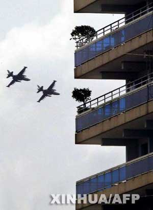
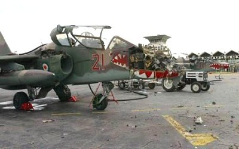

Bouaké : bombardement des forces françaises
Sources : http://www.lavoixdunord.fr/vdn/journal/2004/11/07/INFO_GENE/ART1.phtml - 07/11/04
06/11/04 :
La reprise de la violence en Côte d’Ivoire entre le gouvernement de Laurent Gbagbo et les forces rebelles s’est soldée hier par la mort de soldats français. Samedi en effet, à Bouaké (centre de la Côte d’Ivoire), neuf soldats français ont été tués et une trentaine blessés au cours de bombardements aériens menés par l’armée du président ivoirien Laurent Gbagbo. Un citoyen américain, un Malien et un Sénégalais ont aussi été tués. La plupart des soldats tués ou blessés provenaient du Régiment d’infanterie de chars de marine (RICM) de Poitiers.
D’après Sidiki Konaté, porte-parole des Forces Nouvelles (FN, rebelles), les chasseurs-bombardiers Sukhoï, qui ont tué les soldats, visaient un camp de ces rebelles proche du cantonnement français.
© Lavoixdunord.fr
L'attaque a aussitôt déclenché une riposte française. Les deux chasseurs-bombardiers ivoiriens ont été abattus lors de leur retour à Yamassoukro et le président Chirac a donné, hier soir, l'ordre express de détruire les cinq hélicoptères de combat MI-24 de l'armée ivoirienne. Des Mirage F1 ont été positionnés à Libreville (Gabon) et deux compagnies d'intervention ont quitté la France pour renforcer le dispositif français en Côte d'Ivoire.
Karène Bassompierre
© Ouest-France Multimédia
Une position tenue par la force française Licorne à Bouaké (centre) a été bombardée ce samedi à 14H00 par deux (avions) Sukhoï 25 des forces des forces gouvernementales. En réplique à cette agression, la force Licorne a détruit les deux Sukhoï vers 14H15 à Yamoussoukro (centre)", a indiqué le ministère français de la Défense dans une déclaration lue à l'AFP.
© lexpress.fr
"Compte tenu de la situation en République de Côte d'Ivoire, la France a décidé de déployer trois Mirage F1-CR à Libreville en provenance de N'Djamena par mesure de précaution", selon une source militaire française citée par l'AFP
© Agence de Presse Xinhua


Page mise à jour le 29 Décembre 2004